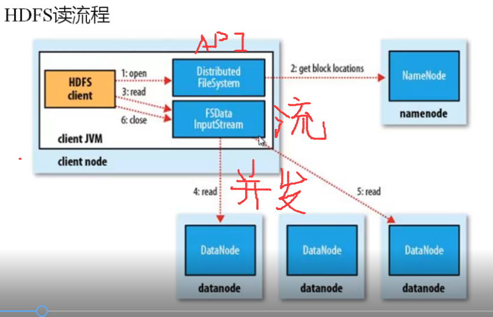
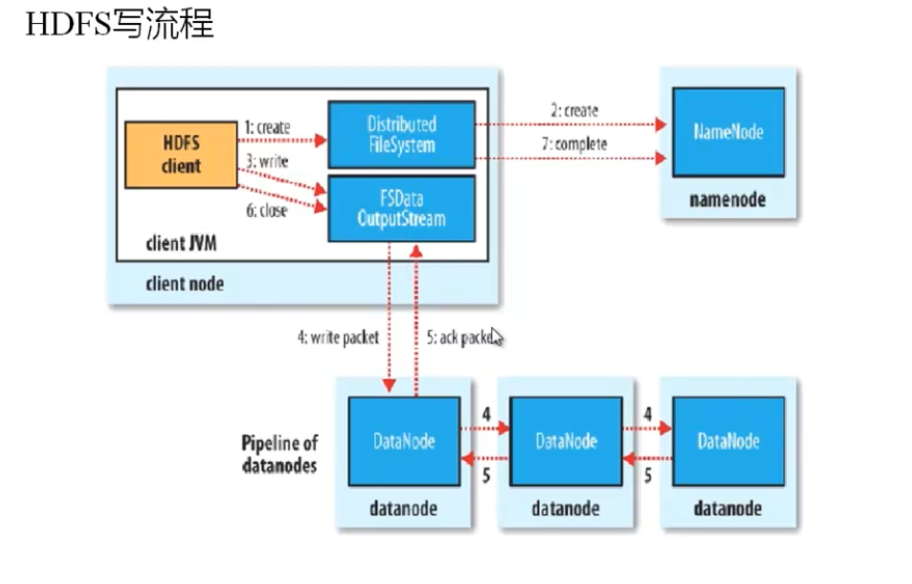
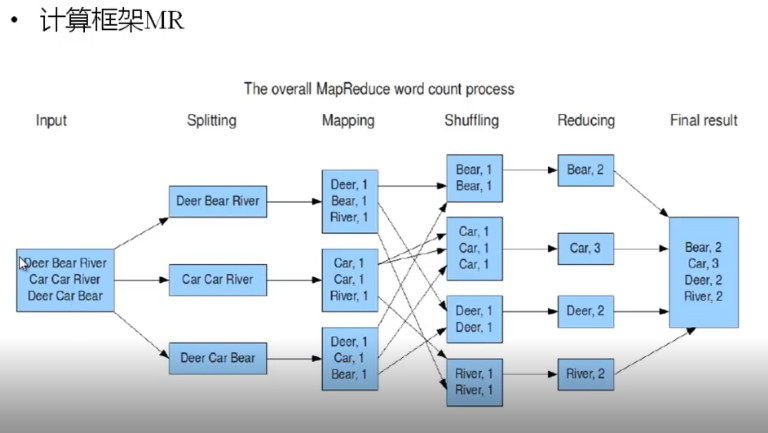
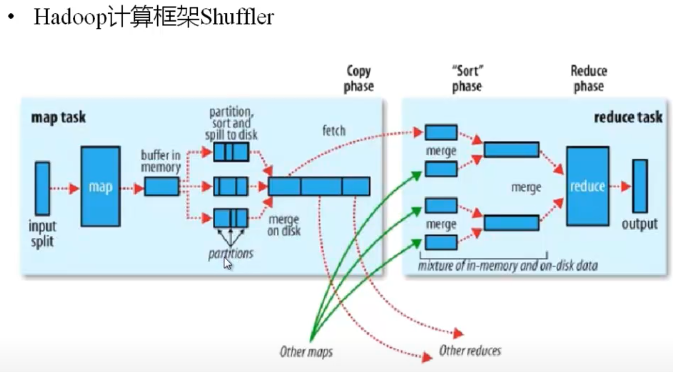

Hadoop系列二：Hadoop基础，包括hdfs以及mr
Hadoop
- 由google的三篇论文：GFS,MapReduce,BigTable而来。这三篇论文分别对应着：HDFS,MapReduce,HBase
- 家族包括：Core,HDFS,MapReduce,HBase,Zookeeper,Hive
- 应用上还包括：Flume,Mahout,Sqoop
HDFS【分布式存储】
复习
主要就是HDFS的3种节点以及它们的运行机制
HDFS运行机制
三种节点
包括：
NameNode：名字节点存在磁盘，并加载到内存
DataNode：磁盘，数据大数据复制
一个NameNode对应多个DataNode，冗余机制- 故障检测
数据节点：心跳包（检测是否宕机），块报告，数据完整性检测（校验和比较）
名字节点：日志文件，镜像文件 - 空间回收机制
节点的增删改
HDFS架构
- HDFS client 通过NameNode获取到DataNode的信息，然后访问DataNode
- 在DataNode中，文件以固定大小的（默认64MB）块存储，每个块有多个备份（默认3个）。固定大小通过HDFS Client设定好以后，不能更改，多个备份可以。备份被存在不同的节点上，当有节点坏掉，数据会自动部分到空的节点上。
NameNode
- 主要功能：接受客户端的读写服务
- NameNode中保存的metaData包括
- 文件owership和persissions
- 文件包含哪些Block
- Block保存在哪些DataNode中（此部分不存在磁盘上，而由DataNode通过心跳机制实时上报）
- NameNode的metaData信息会在启动后加载到内存
- metadata存储在磁盘上，名字是fsimage
- Block的位置信息不保存在fsimage中
- edits记录对metadata的操作日志，对metaData的操作不是立即完成的，而是每隔一段时间根据edits文件，完成对metaData的操作，或者合并editsLog。此部分就是一个事物Transaction。
SecondNameNode（SNN）
- 主要功能：帮助NameNode合并edits，减少NameNode的工作量.合并之后得到新的fsimage
- SNN主要工作是帮助NN合并editLog，减少启动时间
- 合并机制：
- 根据配置晚间设置的时间间隔fs.checkpoint.period默认3600s
- 根据配置文件设置editsLog大小fs.checkpoint.size规定edits文件的最大值,默认64MB
DataNode（DN）
- 存储Block
- 每三秒通过心跳想NN保持联系，如果NN10分钟没有收到DN的心跳，则认为其已经Lost，并copy其上的Block到其他DN
- 刚刚启动时，处于安全模式下，此刻的namenode运行在安全模式，及namenode的文件系统对于客户端来说是只读的。此阶段ND收集DD的报告，还会对DD进行维护。
HDFS IO
读

写

HDFS文件权限
- 与Linux文件权限类似
- 数据安全性不高的存在HDFS上，用户密码等还是关系数据库上
安装与配置
下载
配置
http://hadoop.apache.org/docs/r1.2.1/single_node_setup.html- 配置文件修改：
core-site.xml：设置NN的所在机器及端口，还有tmp文件，参考core.default
hdfs-site.xml：配置block备份的个数hadoop.tmp.dir = /opt/hadoop-1.2/tmp
slaves：设置的DataNode所在的机器名
masters: SNN的所在机器 - ssh免密码登录：
why：远程登录到其他节点上，启动其他的节点。在NN节点上启动即可完成所有节点的启动。在任何节点上敲命令，可以启动所有节点
how：
在node1上生成密钥ssh -keygen -t dsa -P ‘’ -f ~/.ssh/id_dsa.生成3个文件公钥，私钥
将公钥复制到其他节点上，在其他节点上，touch authorized_keys，然后将公钥放入即可。老师在完成时，在其他节点机上也执行了2个命令。cat >> 追加 - 拷贝文件:scp -r ~/hadoop-1.2.1.tar. root@node2:~/
- 创建软链接：ln -sf /root/hadoop-1.2 /home/hadoop-1.2
- 拷贝配置文件scp ./* root@node2:/home/hadoop-1.2.1/conf
格式化
cd ./bin
./hadoop namenode -format
生成文件，在前边定义的目录下
启动
Java中配置，在more /etc/profile要配置,在/home/hadoop/conf/hadoop_env中也要配置
关闭防火墙:service iptables stop关闭防火墙。
./start-dfs.sh
注意设置设置JAVA_HOME
./stop-dfs.sh
通过jps可以看目前启动的节点，若没有启动，
在windows上配置域名解析
c:/windows/system32/drivers/etc/hosts
增加ip与机器名的对应关系。
然后在浏览器中http://node1:50070(http协议)ipc协议是9000
端口检测netstat -npltu | grep ":50070"
修改hostname
1./etc/hosts，增加ip与主机名的对应
2./etc/sysconfig/network，增加HOSTNAME=主机名项
搭建问题解决记录:1天时间
问题在浏览器下打开node1的50070端口显示无法打开
- 都说是node1的初始化问题，尤其是Y与y问题，结果性formate无效
- 然后去查看node1上的端口，发现是tcp6,于是禁用ipv6重试，无效
- 此时有种感觉，是不是NAT方式所说的主机没法访问虚拟机导致，但ping可以通，理论上应该http也可以。
NoRouteToHostException: No route to host问题
- 偶然间发现node2上的jps时，datanode与SNN没有启动，在dataNode日志文件中发现NoRouteToHostException: No route to host的提示
- 关闭防火墙：service iptables stop，结果发现并没有iptables模块，也就不存在关闭不关闭。
- 修改主机名，node1与node2，注意在/etc/hosts中添加路由信息，双方都可以通过ping node1/node2通
- 再次重新清空的/opt/hadoop-1.2的内容后，重新format，依旧无效。
- 既然能够ping通，应该还是属于防火墙问题，经查后CentOS使用firewall
CentOS 7.0默认使用的是firewall作为防火墙，使用iptables必须重新设置一下
systemctl stop firewalld.service #停止firewall
systemctl disable firewalld.service #禁止firewall开机启动 - 如此datanode可以启动
- 再次访问，浏览器，发现可以通过50070访问。
MapReduce(MR)【分布式计算】
复习
核心就是MR的过程，split,map,shuffle,reduce，这个核心其实spark老师讲的更好。
简介
分布式计算框架，如spark（内存计算，快速得到结果），storm（流式计算，实时计算），离线计算。
分布计算：移动计算，而不移动数据。拷贝运行程序到节点机上运算，而不拷贝数据。
4种步骤

将HDFS数据split切块，然后map，然后shuffle部分（sort,copy,merge），最后是reduce步骤。
map线程数与split个数相同
map的输入输出必须是键值对
map不做合并
shuffling做排序、合并，并不合并逻辑
reduce与shuffle并不–对应，reduce可以一次做多个shuffle
主从结构
- 主JobTracker
负责调度分配每一个子任务task运行于TaskTraker上，如果发现有失败的task就重新分配到其他节点。每个Hadoop集群只有一个JobTracker，一般运行在Master节点上。
JobTracker可以跑在任意机器上
在2.0之后就没有了 - 从TaskTracker
TaskTracker主动与JobTracker通信，接收任务，并负责直接执行每一个任务，为减少网络带宽，TaskTracker最好运行在HDFS的DN上。
计算框架MR
- MapReduce的思想：分而治之
- 移动计算而不移动数据
- reduce不可避免会移动数据：reduce的task tracker尽量在数据节点上来完成，少移动数据。
split
- 把每一个Block切成片段
算法
max.split(100M)
min.split(10M)
block(64M)max(min.split, min(max.split, block))【括号里边的可能有问题】，其实就是取max.split，min.split，block的中间值大小
以上结果是65M，即每个split大小就是64M.Block不需要再切。
map
- 每个map task都有一个内存缓冲区默认100MB，存储map输出结果
- 当内存缓冲区满时，以一个临时文件方式存放磁盘（溢写）
- 溢写由单独线程文成，不溢写map结果的存放。
shuffler阶段

- 大多数由MR框架决定，程序员代码只能做一部分
- 可以把mapper的输出按照某种key值重新切分和组合成n份，把key值符合某种范围的输出到特定的reducer那里去处理
partition
map完成后的数据在内存中，在溢写时，通过partition（分区）,sort溢写到磁盘。partition可以由程序员控制分区，并且有默认分区，Hash模运算。分区是为了把map数据，负载均衡，数据倾斜（map与reduce之间，partition之后的分区数据不均衡，此时需要重新partition）。每个partition之后的结果交给一个reducer来执行
分区打一个标志。
sort
比较规则：默认按照对象的ASCII码的值，字典排序，而不是数值大小。
程序员也可以改变。
combiner(merge on disk)
将sort之后的数据存到本地磁盘，每次溢写都会产生一个文件，此时会进行合并，默认根据hash来合并.减少map的输出。
combiner其实可以看作是对单机的reduce.
reduce
copy
mapper与reducer不再同一机器上。
根据patition分的copy到对应的reduce上。
这个disk称为Task Traker
merge
此时从不同机器上拷贝，reducer会根据key自动合并这些数据。
这部的合并可能也是溢出合并
reduce
reduce可能并发，也可能不并发
安装
修改配置文件mapred-site.xml
- 指定JobTracker所在机器，TaskTrack不需要制定，默认在DN上跑
1 | <configuration> |
问题
java.net.BindException:problem bining to node3/192.168.239.5:9001:Cannot assign requested address
我觉得可能还是防火墙问题。tail -n50
访问
http://node1:50030/
elipse插件问题:1天时间
插件经过一天的实验,终于能够正常使用,期间经过了很多步骤:
首先下载了一个,在MyEclipse中除了右边有个DFS,没有其他的按钮,怀疑的MyEclipse问题,或者是插件的问题
分2路:其一从网络上找到了如何编译插件,己经修改,终于编译成功,实验,没有效果;其二怀疑是eclipse的问题,分别下载了4.7版本与4.4版本,实验依旧没有效果.
这期间,发现了windows,view,other中是由MapReduce选项,点击后出现菜单.接着,是连接不上问题,看log,一直是说有类没有找到,而这些类就在插件jar包的lib目录下.怀疑是MateInfo的问题,己经修改依旧没有效果.
最后,使用了昏招.将lib下Jar包分别的解包,将里边的class文件放到class下,发现能够连接,并且看到hdfs中的内容.下边只能连接,却不能修改.permission deny.经查,在环境变量中,增加了HADOOP_USER_NAME=root后解决.
WordCount
- WcMapper
重新map方法，注意map传入传出值，下标LongWritable=long，Text=String，IntWritable=int。map主要是分的功能，将传如的行数据，变成键值对。 - WcReducer
重写reduce方法，reduce的输入时shuffle后排序好的数据，sum迭代器中的数据即可 - JobRun
这里比较固定，有Config，设定map，reduce等等
好友推荐
- 简介
存双向的关系对，合并后，用Cn2的方式来获得两两之间的关系即可。 - Mapper
mapper中，将好友对分离，然后存2个方向的map - reduce
在默认的shuffle中，会将相同key值的合并。reduce接受到的数据，就是经过合并之后的，在其iteration中，就是可以推荐的好友。主要是将这些iteration中的好友两两组队输出即可。采用双层for循环即可。 - 问题：
在ArrayList存储Text类型的数据时，add不成功，导致最后的结果输出不正确。转换为String后，能够正确的输出。